ロータリーエンコーダ
ロータリーエンコーダプレートの組み立て
-
左右共通のリバーシブル基板になっています
6つの穴を内側に、ロータリーエンコーダの二つの穴が下に来るように配置します (左が1個ver、右が2個ver) 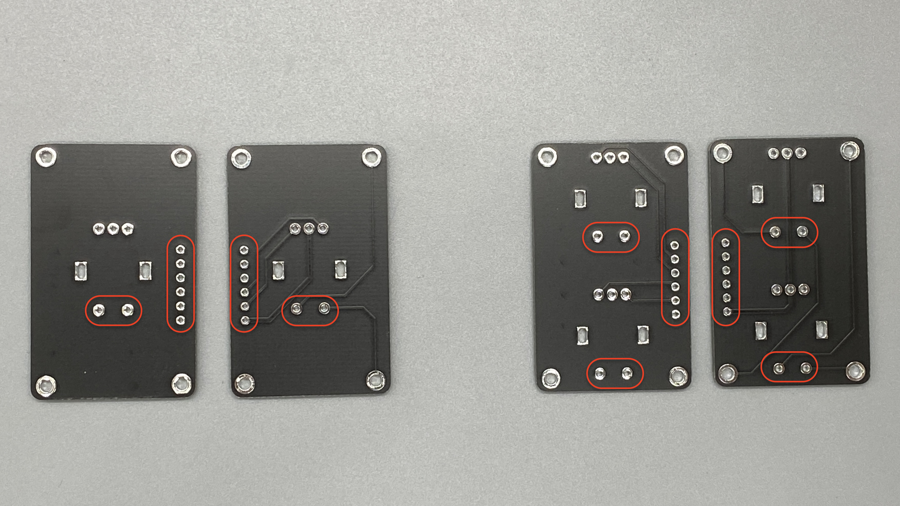 -
上からロータリーエンコーダを取り付けます 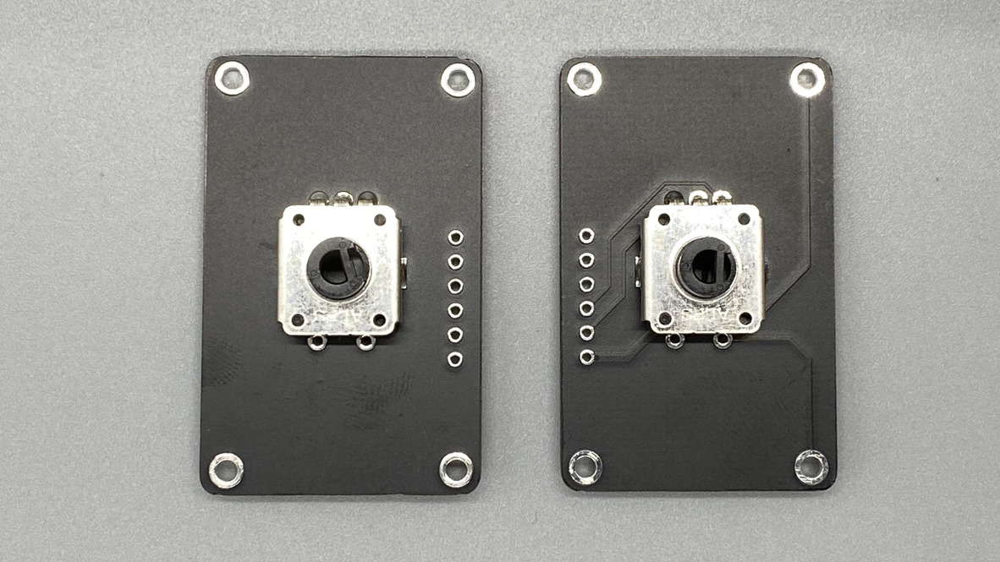
-
足が下のパーツと干渉するので折り曲げるか切り取って短くしてください
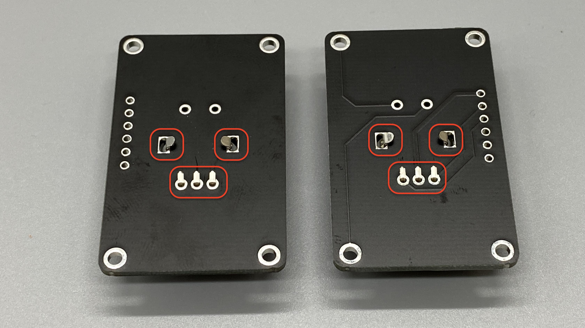 -
はんだ付けをします 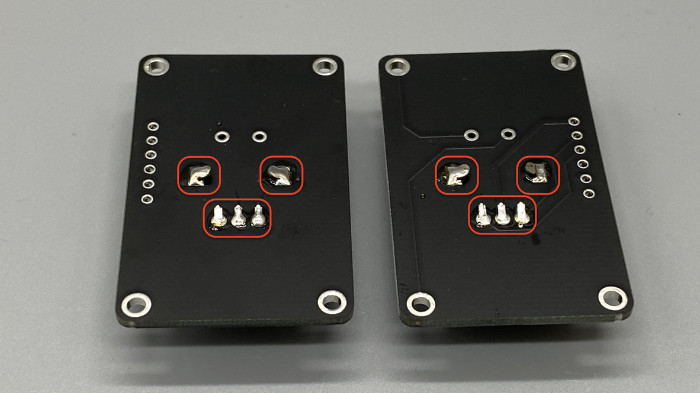
-
干渉するようであれば、カプトンテープなどで絶縁してください（絶縁できればなんでも良いです）
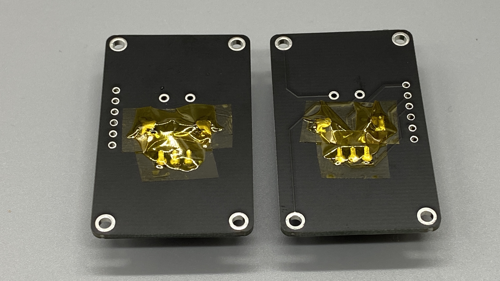 -
6ピンコンスルーをプレートにはんだ付けします
窓がある方をプレート側にします
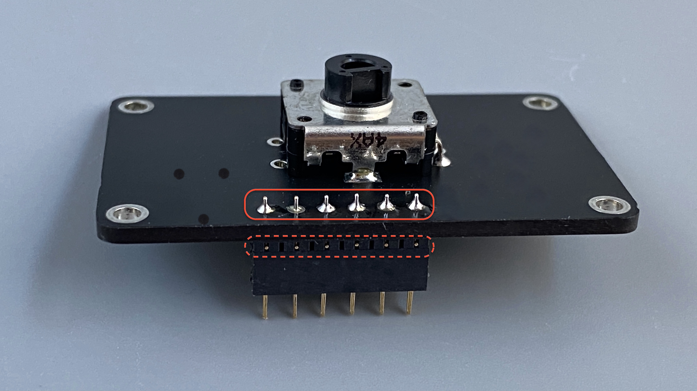
ロータリーエンコーダの取り付け
-
Pro Micro保護プレートをはずします
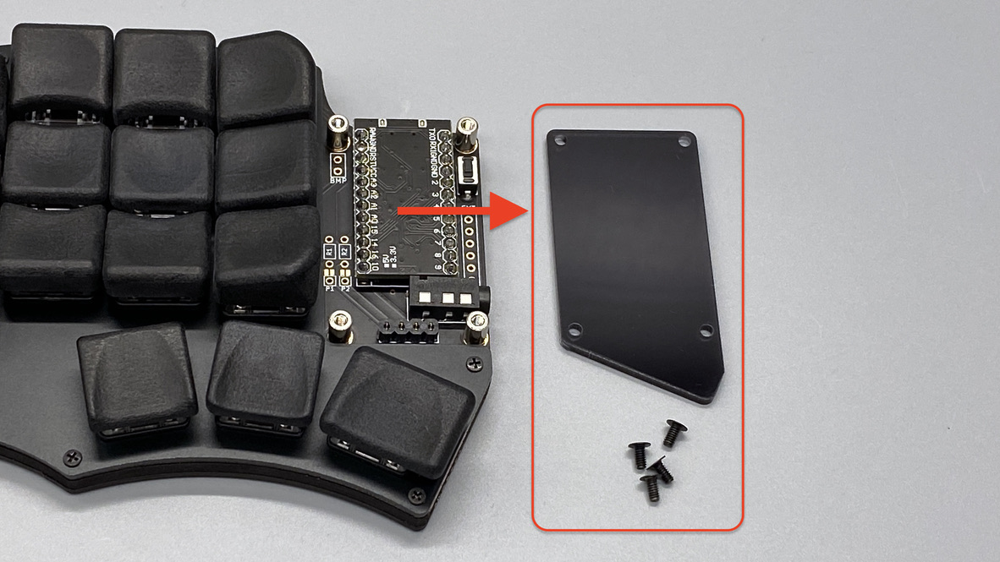 -
エンコーダプレートを上から載せて、ねじ(4mm)で留めます 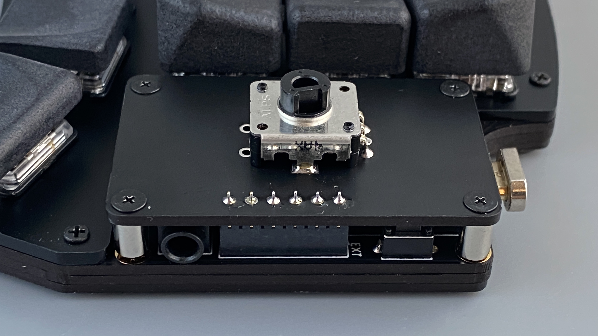
-
ノブを取り付けたら完成です
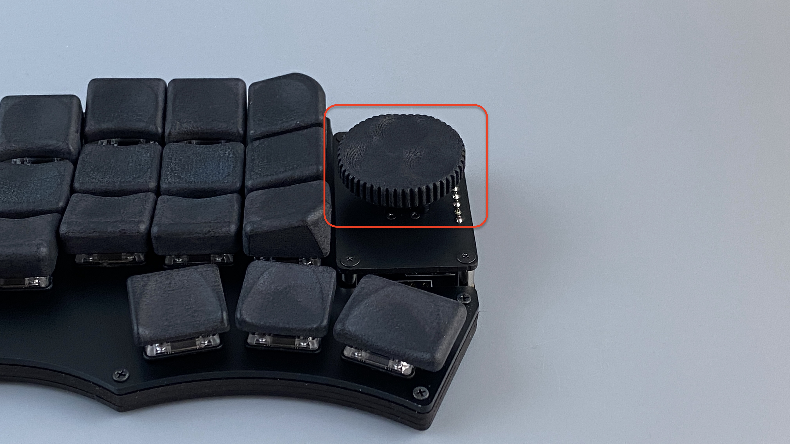
ロータリーエンコーダの種類
- Alps EC11,EC12E互換のロータリーエンコーダを使用できます
- プレートに載せる都合上、高さの抑えられるロープロファイルタイプをおすすめします
- wings42に合わせたオリジナルのノブも販売していますのでご検討ください
プレートの組み合わせ
- 最大4つのロータリエンコーダが使えます
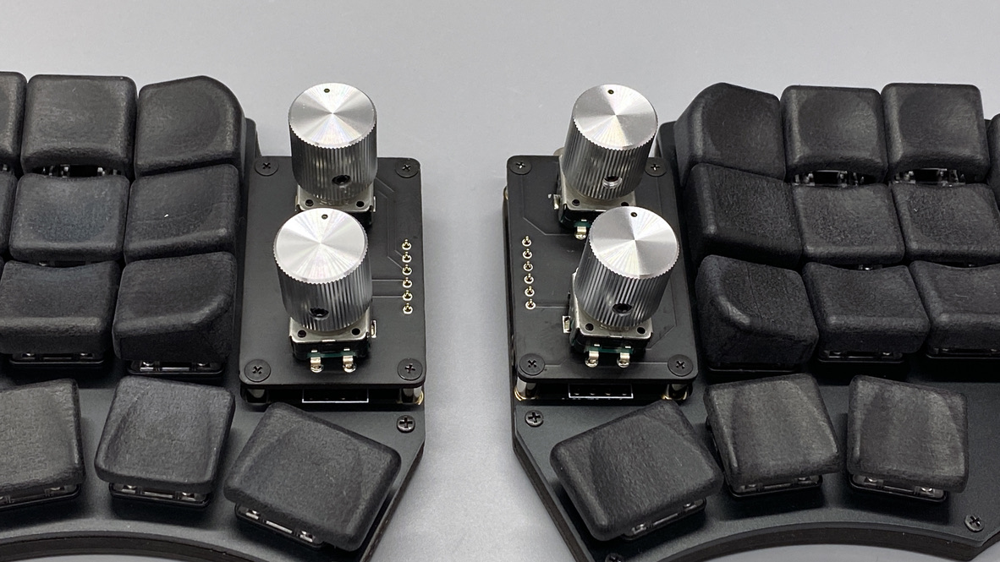 - オリジナルノブは片側に一つしかつかないので注意してください
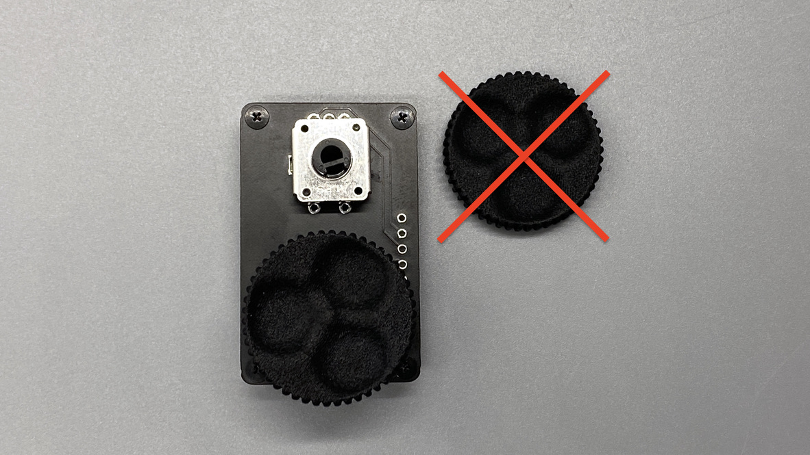 - 2個バージョンは細いのと、オリジナルノブを使うのがおすすめです 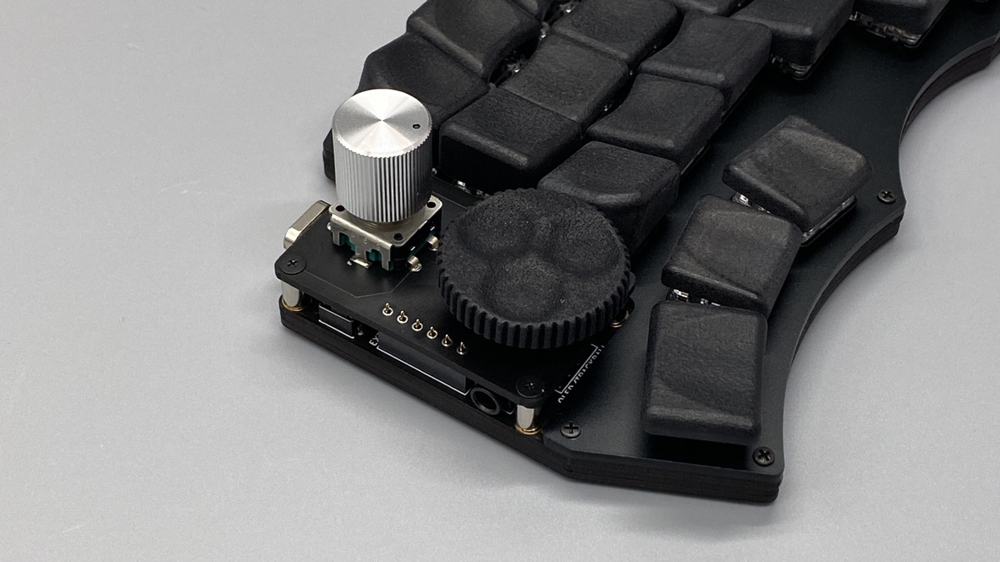
- キースイッチ拡張プレートと同時に使うことも可能です
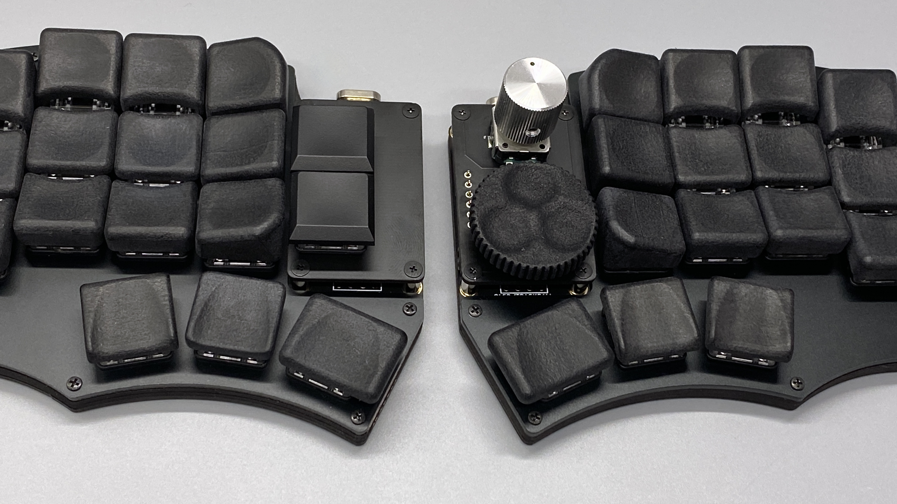
ファームウェア
Remapで設定する場合
- クリック有りのエンコーダは上の枠の部分が有効になります（キー拡張と同じ部分)
- エンコーダの設定は下の枠の部分でできます
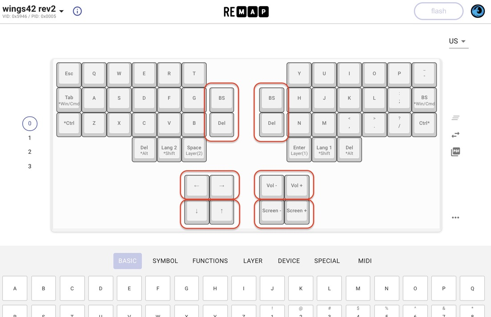
ソースコードで設定する場合
- QMKのエンコーダのドキュメントを参考にしてください
- サンプルコード
Last modified January 1, 0001